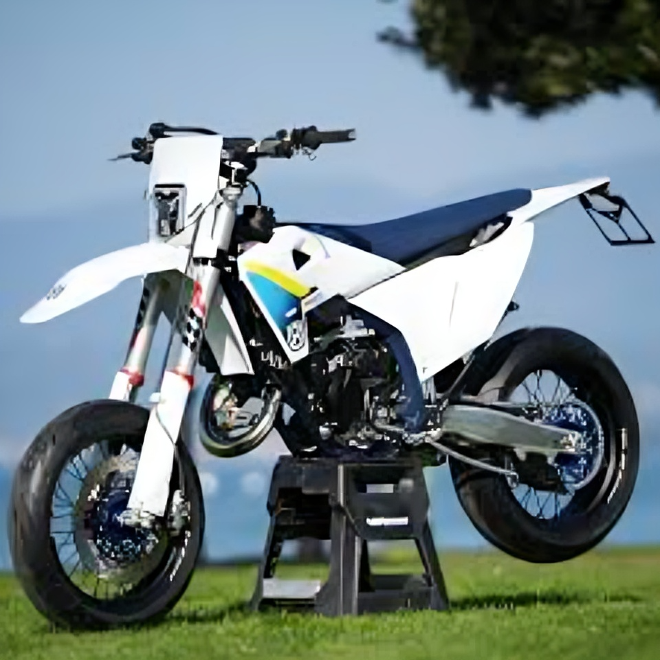
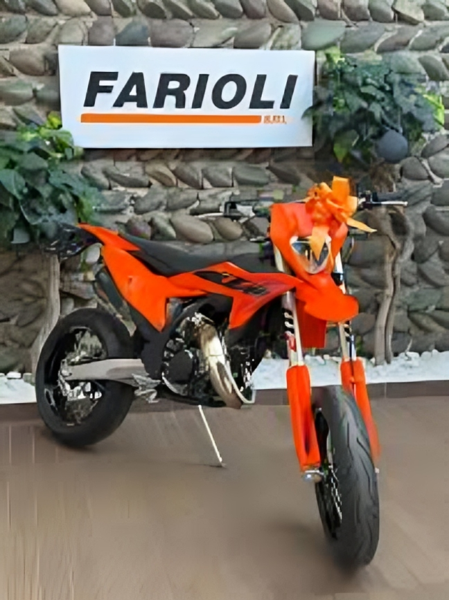
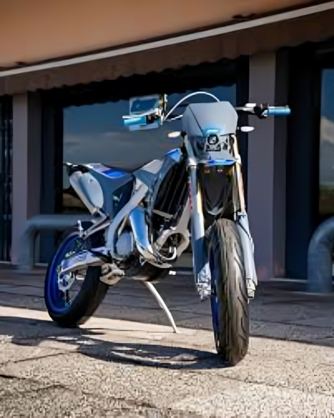
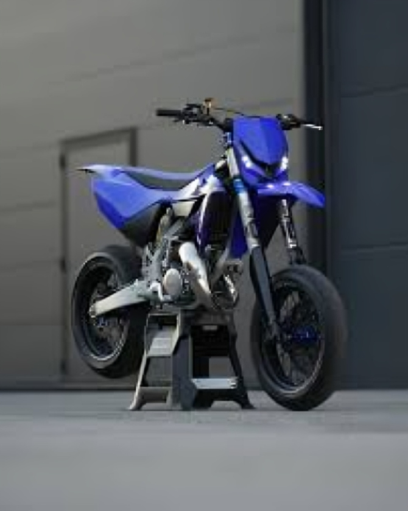
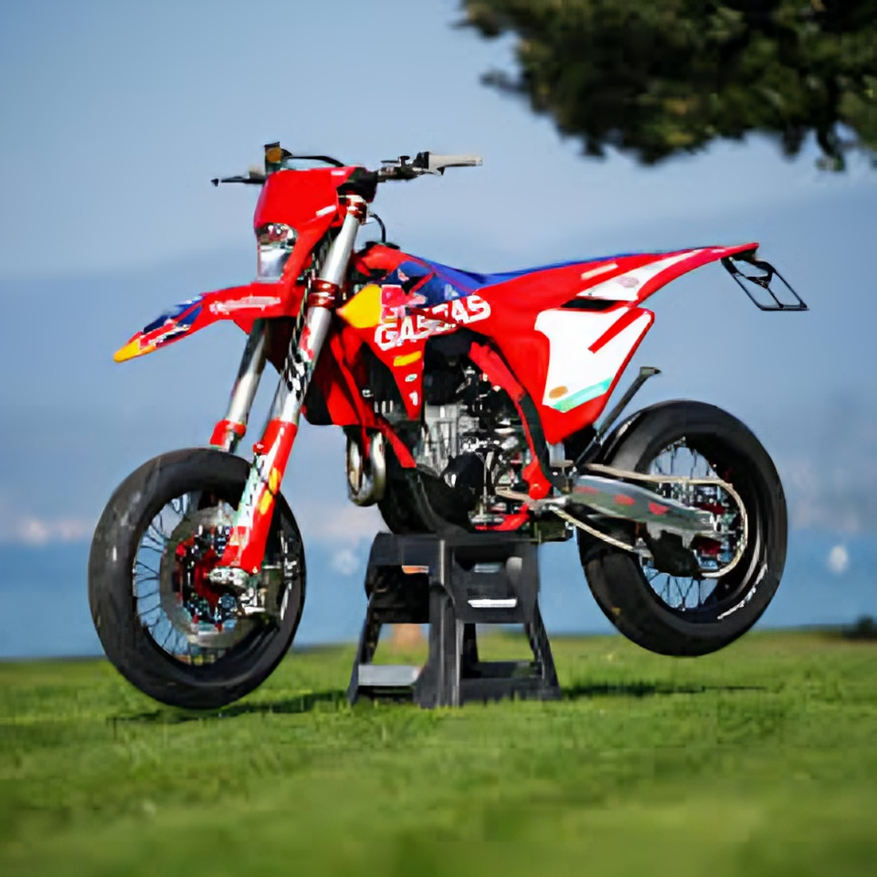
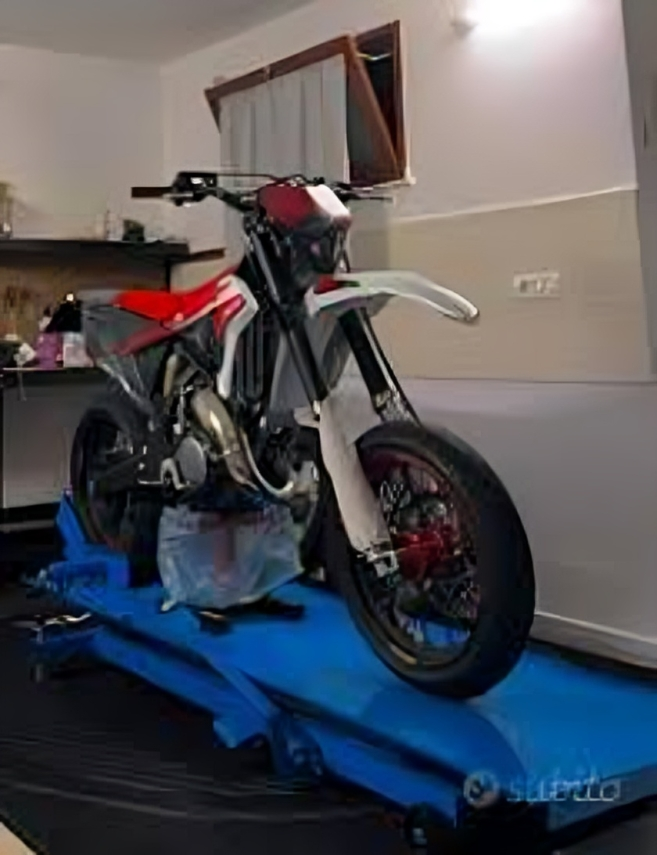

GARAGE / SELEZIONE PERSONALE
I miei 125 2 tempi preferiti.

Husqvarna TC 125 (2025) Cilindrata: ≈ 124.8 cm³ Potenza: circa 40 HP Peso a secco: 92.6 kg Altezza sella: 946 mm Ciclistica: Telaio: central double-cradle in acciaio cromomolibdeno; subframe in poliammide rinforzato Sospensioni: WP XACT USD Ø48 mm (305 mm travel); WP XACT mono (293 mm)

KTM 125 SX (2025) Cilindrata: ≈ 124.8 cm³ Potenza: circa 40 HP Peso a secco: 92.8 Altezza sella: 956 mm Ciclistica: Telaio: acciaio cromomolibdeno central double-cradle Sospensioni: forcella WP XACT AER Ø48 mm; mono WP XACT

SMR 125 Fi (2025) Cilindrata: ≈ 124.8 cc Potenza: 38 CV Peso a secco: 100 kg Altezza sella: circa 920 mm (2100 mm? Better: 92 cm 'wet weight') Ciclistica: Telaio in acciaio al cromo-molibdeno con piastre in alluminio, Forcella USD (Kayaba o Paioli, a seconda della versione), Monoammortizzatore regolabile, Cerchi da 17" (tipici da motard), Freni ad alte prestazioni (Brembo / Braking a seconda della versione).

Yamaha YZ 125 (2025) Cilindrata: ≈ 124.8 cc Potenza: 39 CV Peso a secco: 91 kg Altezza sella: 990 mm Ciclistica: Sospensioni: forcella KYB invertita; mono KYB (interamente regolabili).

GASGAS MC 125 (2025) Cilindrata: ≈ 124.8 cc Potenza: circa 40 HP Peso a secco: 92.8 kg Altezza sella: 956 mm Ciclistica: Telaio: central double-cradle in acciaio 25CrMo4 Sospensioni: forcella WP XACT USD Ø48 mm; mono WP XACT con leveraggio
